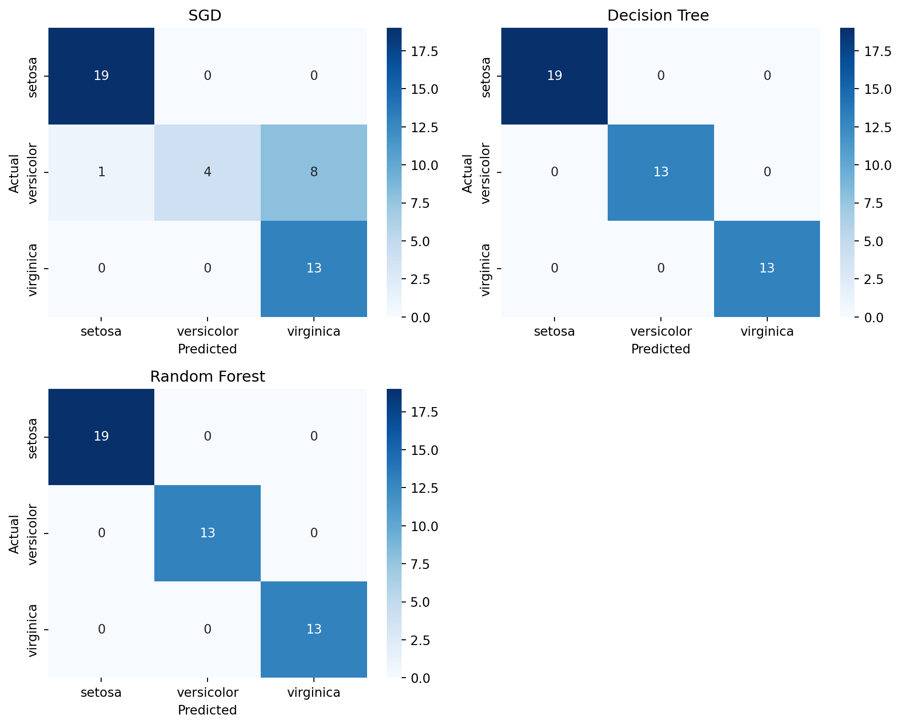
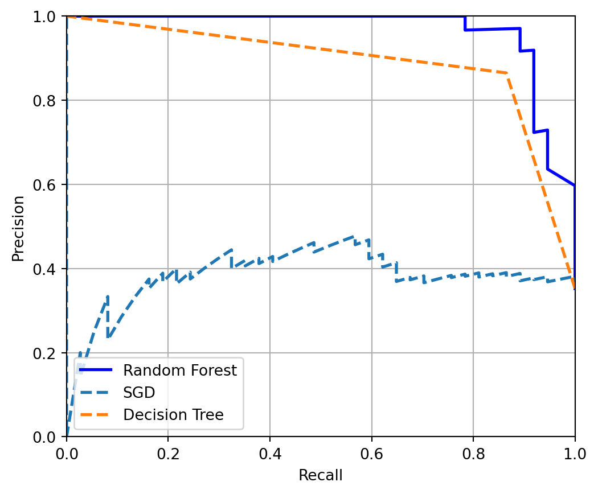

#importing necessary libraries
import sklearn
from sklearn import datasets
import pandas as pd
import numpy as np
from matplotlib import pyplot as plt
import seaborn as snsSo you have decided to classify stuff i.e. you have a labelled dataset and want your machine learning model to classify the dataset into desired labels. This is wonderful. If you are familiar with Sci-kit learn you can easily fire up few models to do your job. But this begs the question, what is the best model to use for your particular task. And no, it is not the most fancy model with out of the world complexity although it does look like a very attractive option. So how do we decide what is the best? Let’s find out together.
Load up the dataset
We can use any dataset in our disposal. scikit-learn comes with a few small standard datasets that do not require to download any file from some external website. So, we will use one of them to show how to evaluate the models we build. We will keep life simple and flowery!
iris = datasets.load_iris()Now that we have the dataset, first thing we will do is assign it to target and variables.
x=iris.data
y=iris.target
print(x[0:3])
print(y[0:3])[[5.1 3.5 1.4 0.2]
[4.9 3. 1.4 0.2]
[4.7 3.2 1.3 0.2]]
[0 0 0]Not very descriptive is it? This is perhaps the best known database to be found in the pattern recognition literature. The data set contains 3 classes of 50 instances each, where each class refers to a type of iris plant. One class is linearly separable from the other 2; the latter are NOT linearly separable from each other. You can find details here : https://scikit-learn.org/stable/datasets/toy_dataset.html
We can now find the attributes information
print("The features are: ",list(iris.feature_names))
print("The target classes are: ", list(iris.target_names))The features are: ['sepal length (cm)', 'sepal width (cm)', 'petal length (cm)', 'petal width (cm)']
The target classes are: ['setosa', 'versicolor', 'virginica']So, X is an array of the features respectively and y have the class attributes. For example, 0 stands for setosa, 1 stands for versicolor and so on. You get the idea! We will use the features to predict the class of the sample flower. Told you it is going to be flowery!
Training and Testing split
As usual, we need a dataset to teach the model the pattern, the Training Set and another to test how good a student it really is, the Testing Set.
from sklearn.model_selection import train_test_split
# 70% for training and 30% for testing
X_train, X_test, y_train, y_test = train_test_split(x, y,test_size=.3, random_state=42) #The answer to everythin in the universe is 42, use it.Lets fire up the models
Now we get to choose the models we want to evaluate, For demonstration purposes, I am choosing 3 models - SGD Classifier, Decision Tree Classifier and Random Forest Classifier. You can choose any models you want but the framework will be same.
#importing the models
from sklearn.linear_model import SGDClassifier
from sklearn.tree import DecisionTreeClassifier
from sklearn.ensemble import RandomForestClassifier
sgd_model = SGDClassifier(random_state = 42)
dt_model = DecisionTreeClassifier(random_state = 42)
rf_model = RandomForestClassifier(random_state = 42)We have the models. First, we can use the Accuracy metric to see how all three can perform.
from sklearn.metrics import accuracy_score
models = {
"SGD ": sgd_model,
"Decision Tree ": dt_model,
"Random Forest": rf_model
}
def model_accuracies(models, X_train, y_train, X_test, y_test):
for model_name, model in models.items():
model.fit(X_train, y_train)
y_pred = model.predict(X_test)
accuracy = accuracy_score(y_test, y_pred)
print(f"{model_name}: {accuracy:.2f}")
model_accuracies(models, X_train, y_train, X_test, y_test)SGD : 0.80
Decision Tree : 1.00
Random Forest: 1.00Whoa! Would you look at that! But seriously life can not be that good, right? We can not trust the model yet. For a better understanding, we need to look at something called Cross-Validation
Cross-Validation
We split the data into k folds i.e. k number of non overlapping subsets. In this case, lets do 3 folds to keep it simple. Another concept is using a Dummy Classifier. It does not look at the features. In concept, your model has to surpass the dummy classifier to be considered a good model.
from sklearn.model_selection import cross_val_score
from sklearn.dummy import DummyClassifier
dummy_clf = DummyClassifier()
def cv_score(models,X_train, y_train):
for model_name, model in models.items():
cv_score = cross_val_score(model,X_train, y_train, cv=3, scoring="accuracy").mean().round(3)
print(f"{model_name}: {cv_score}")
cv_score(models,X_train, y_train)
print("Dummy Classifier: ", cross_val_score(dummy_clf ,X_train, y_train, cv=3, scoring="accuracy").mean().round(3))SGD : 0.924
Decision Tree : 0.895
Random Forest: 0.933
Dummy Classifier: 0.343Alright, now the SGD model does not look too bad, does it? But there is another check we need to do. That is called Confusion Matrix
Confusion Matrix
Simply put, it is a visual tool to undestand how confused the model is when predicting the classes. Or we can say a tool to understand how much the model is misclassifying each classes. We can generate the confusin matrix for each model below-
from sklearn.metrics import confusion_matrix
import seaborn as sns
class_names = list(iris.target_names)
def plot_confusion_matrices(models, X_train, y_train, X_test, y_test, class_names):
fig, axes = plt.subplots(nrows=2, ncols=2, figsize=(10, 8))
axes = axes.flatten()
fig.delaxes(axes[3])
for i, (model_name, model) in enumerate(models.items()):
model.fit(X_train, y_train)
y_pred = model.predict(X_test)
sgd_cm = confusion_matrix(y_test, y_pred)
sns.heatmap(sgd_cm, annot=True, fmt='d', ax=axes[i], cmap='Blues')
axes[i].set_title(model_name)
axes[i].set_xlabel('Predicted')
axes[i].set_ylabel('Actual')
axes[i].set_xticklabels(class_names)
axes[i].set_yticklabels(class_names)
plt.tight_layout()
plt.show()
plot_confusion_matrices(models, X_train, y_train, X_test, y_test, class_names)
As we can see in the figure, SGD had 8 instances where it misclassified Versicolor as Virginica. So our choice comes to the Decision Tree and Random Forest. Now we did a multiclass classification. Two important metrics are recall and precision. This concept is better understood in binary classfification. We can make our multiclass problem into binary problem by selecting a class. Maybe we can go with the class Versicolor. So, our models are going to predict if an instance represents versicolor or not.
Recall and Precision
To understand recall and precision we need to understand few terms from a binary confusion matrix. So first, we can generate one for SGD after binarizing the data.
from sklearn.preprocessing import label_binarize
y_bin = label_binarize(y, classes=[0, 1, 2])[:, 1]
X_train_bin, X_test_bin, y_train_bin, y_test_bin = train_test_split(x, y_bin,test_size=.3, random_state=42)
sgd_model.fit(X_train_bin, y_train_bin)
y_pred_bin = sgd_model.predict(X_test_bin)
sgd_cm = confusion_matrix(y_test_bin, y_pred_bin)
# Extracting the values from the confusion matrix
TP = sgd_cm[1, 1] # True Positives
TN = sgd_cm[0, 0] # True Negatives
FP = sgd_cm[0, 1] # False Positives
FN = sgd_cm[1, 0] # False Negatives
print("True Positives: ", TP)
print("True Negatives: ", TN)
print("False Positives: ", FP)
print("False Negatives: ", FN)True Positives: 1
True Negatives: 32
False Positives: 0
False Negatives: 12Key Attributes of a Confusion Matrix
True Positives (TP): These are cases in which the model correctly predicts the positive class. In other words, instances where the actual class is positive, and the model also predicts a positive class.
True Negatives (TN): These are cases where the model correctly predicts the negative class. This means the actual class is negative, and the model also predicts a negative class.
False Positives (FP): These are instances where the model incorrectly predicts the positive class. This happens when the actual class is negative, but the model predicts a positive class. It is also known as a “Type I error”.
False Negatives (FN): These are cases where the model incorrectly predicts the negative class. In these instances, the actual class is positive, but the model predicts a negative class. This is also referred to as a “Type II error”.
Precision
Precision is the ratio of correctly predicted positive observations to the total predicted positive observations. It is a measure of a classifier’s exactness. A low precision indicates a high number of false positives. The precision is defined as:
\[ \text{Precision} = \frac{\text{TP}}{\text{TP} + \text{FP}} \]
- TP (True Positives): The number of positive instances correctly identified by the model.
- FP (False Positives): The number of negative instances incorrectly identified as positive by the moel.
Precision is particularly important in scenarios where the cost of a false positive is high. For example, in email spam detection, a false positive (non-spam email incorrectly classified as spam) could mean missing an important email.
Recall
Recall, also known as sensitivity, is the ratio of correctly predicted positive observations to all observations in the actual class. It is a measure of a classifier’s completeness. A low recall indicates a high number of false negatives. The recall is defi\[ \text{Recall} = \frac{\text{TP}}{\text{TP} + \text{FN}} \]
- TP (True Positives): The number of positive instances correctly identified by the model.
- FN (False Negatives): The number of positive instances incorrectly identified as negative by the model.egatives.
Recall becomes critical in cases where missing an actual positive is significantly worse than getting false positives. For instance, in medical diagnosis, a false negative (missing a disease) could be much more detrimental the positive.an a fals
Precision-Recall Curve
The Precision-Recall Curve is a plot that illustrates the trade-off between precision and recall for different threshold settings of a classifier. It is used as a tool to select models that balance precision and recall in a desirable way, especially in scenarios with imbalanced datasets.
import numpy as np
from sklearn.metrics import PrecisionRecallDisplay, precision_recall_curve
from sklearn.model_selection import cross_val_predict
y_probas_dt = cross_val_predict(dt_model, X_train_bin, y_train_bin, cv=3,
method="predict_proba")
y_scores_dt = y_probas_dt[:, 1]
precisions_dt, recalls_dt, thresholds_dt = precision_recall_curve(y_train_bin, y_scores_dt)
y_scores_sgd= cross_val_predict(sgd_model, X_train_bin, y_train_bin, cv=3,
method="decision_function")
precisions_sgd, recalls_sgd, thresholds_sgd = precision_recall_curve(y_train_bin, y_scores_sgd)
y_probas_rf = cross_val_predict(rf_model, X_train_bin, y_train_bin, cv=3,
method="predict_proba")
y_scores_rf = y_probas_rf[:, 1]
precisions_rf, recalls_rf, thresholds_rf = precision_recall_curve(y_train_bin, y_scores_rf)plt.figure(figsize=(6, 5))
plt.plot(recalls_rf, precisions_rf, "b-", linewidth=2,
label="Random Forest")
plt.plot(recalls_sgd, precisions_sgd, "--", linewidth=2, label="SGD")
plt.plot(recalls_dt, precisions_dt, "--", linewidth=2, label="Decision Tree")
plt.xlabel("Recall")
plt.ylabel("Precision")
plt.axis([0, 1, 0, 1])
plt.grid()
plt.legend(loc="lower left")
plt.show()
Now in a precision recall curve, we look at the top right of the curve. Best model for the purpose will be in that region. That means higher precision with higher recall. The interpretation of the results can be explaines as-
Random Forest (solid blue line): This model has the best performance among the three. It maintains a high precision even as recall increases, which means it correctly identifies a high percentage of positive cases and, when it predicts a case to be positive, it is likely correct.
SGD (dashed line): The performance of the SGD model varies more than the Random Forest. Its precision starts lower and fluctuates as recall increases. This suggests that the model may not be as reliable in its positive predictions compared to the Random Forest.
Decision Tree (dashed green line): The Decision Tree’s performance is generally lower than the Random Forest. While it has moments where its precision is high, it also has points where precision drops significantly as recall increases. This might indicate that the Decision Tree model, at certain thresholds, predicts many false positives while trying to capture more true positives.
So there we have it, Random Forest can be used for the job at hand! Thank you for reading the blog